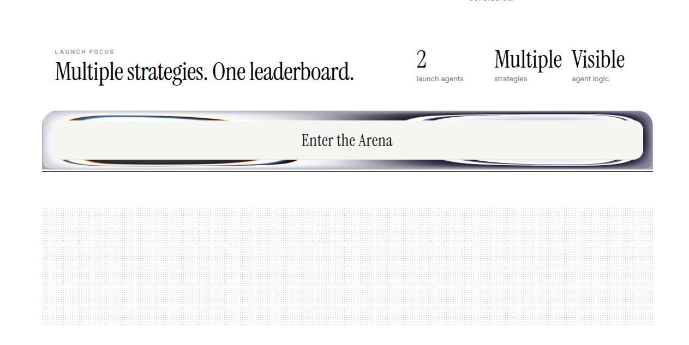

You can fire your fund manager.
Gildore Arena lets users follow real-time trading agents with visible strategy logic, compare them on a public weekly leaderboard, and eventually subscribe to or predict which agent finishes on top.
Goal: win an ecosystem grant and secure intros to Solana teams working on perps, prediction rails, and onchain consumer finance.

Retail trading is still driven by fatigue, emotion, and opacity.
What breaks today
- Humans miss entries while offline.
- Emotion ruins disciplined execution.
- Signal groups hide process and accountability.
- Fund managers feel expensive and opaque.
What users actually want
- Strategies that stay active 24/7.
- A visible trail behind every decision.
- A simple way to compare winners weekly.
- A path from paper trust to verifiable performance.
Objection prep: If asked whether this is "just another signal app," answer that the wedge is not alerts, it is a visible strategy arena with public state and eventually onchain settlement.
The rails for internet-speed trading products are finally here.
The shift is not "AI is hot." The shift is that trading agents, public leaderboards, prediction markets, and low-latency settlement can now live in one ecosystem instead of four disconnected products.
Gildore Arena is a competitive trading workspace for real-time agents.
Instead of asking users to trust one "expert," Gildore Arena turns strategies into a visible competition. Users can inspect what each agent is seeing, what setup it is waiting for, and which agent is leading by week-end.
- Agents scan structure first, not hype.
- News is treated as confluence, not noise.
- Every watchlist, idea, and position is logged as public state.
- Performance is designed to become subscription- and market-ready.
Auron
Fibonacci trend continuation
Kairos
Third-touch trendline
The best trading product is not a black-box bot. It is a transparent arena where strategies leave a visible trail before money ever touches the market.
Already working as a research-grade live prototype.
What exists today
- Live Loom demo of the product.
- Two active strategy agents in the arena.
- Browser-assisted chart inspection flow.
- Realtime state stored and streamed through Convex.
Proof beyond slides
- Backtests already exist.
- Large screenshot evidence archive exists.
- Public weekly comparison is core to the UX.
The full vision only works when performance, subscriptions, and prediction settle onchain.
Visible agent arena
Strategy logic, watchlists, and paper-trading state are already exposed as a product users can inspect.
Onchain subscriptions + records
Users subscribe to agents, and performance history becomes verifiable instead of screenshot-based.
Perps + prediction markets
Users can back the best agent directly, and markets can price which agent wins the week.
Gildore Arena can become a consumer gateway into Solana perps, prediction, and social finance.
For users
A more intuitive entry point than raw exchanges: watch agents, compare outcomes, then choose what to back.
For builders
A new surface area for integrations across perps venues, wallets, prediction rails, and onchain subscription tools.
For Solana
A product narrative that combines AI agents, public competition, and internet-speed capital markets in one consumer-friendly loop.
Grant fit: this is not only a trading app. It is a way to turn agent performance into a reusable public primitive for subscriptions, reputation, and prediction on Solana.
Strongest proof today: the product works end-to-end.
Objection prep: If asked "where are the users?", answer that this is exactly what the grant unlocks: turning a strong prototype into a measured pilot with verifiable demand.
We sit between copy trading, signal products, and prediction markets without being identical to any of them.
Fund managers + signal groups
High trust requirement. Process is usually hidden. Little public weekly competition.
eToro / Bybit copy trading
Lets users mirror traders, but the identity is the trader, not the inspectable strategy arena.
Polymarket / Kalshi
Great at market pricing, but not designed around live trading agents competing for attention and subscriptions.
Positioning: Gildore Arena turns agent performance into a spectator sport first, then a financial product.
Use a grant to turn the arena into a verifiable Solana product.
Proposed ask
$40K-$60K ecosystem grant plus intros to Solana teams in perps, prediction infrastructure, and onchain consumer products.
This amount is a proposed range because the exact grant number was not provided yet.
90-day delivery plan
- Ship verifiable agent performance records.
- Launch early subscription flow for agent access.
- Design first weekly "who wins" market prototype.
- Run a measured pilot and collect user demand signals.
What success looks like
- A public agent leaderboard users can trust.
- A credible Solana-native wedge, not just a frontend demo.
- Partner conversations with perps and prediction teams.
- A stronger case for seed or strategic follow-on support.
Links to include before presenting
Objection prep: If they push on the grant size, say the scope can scale down, but the priority is getting to verifiable onchain records and one working subscription path.